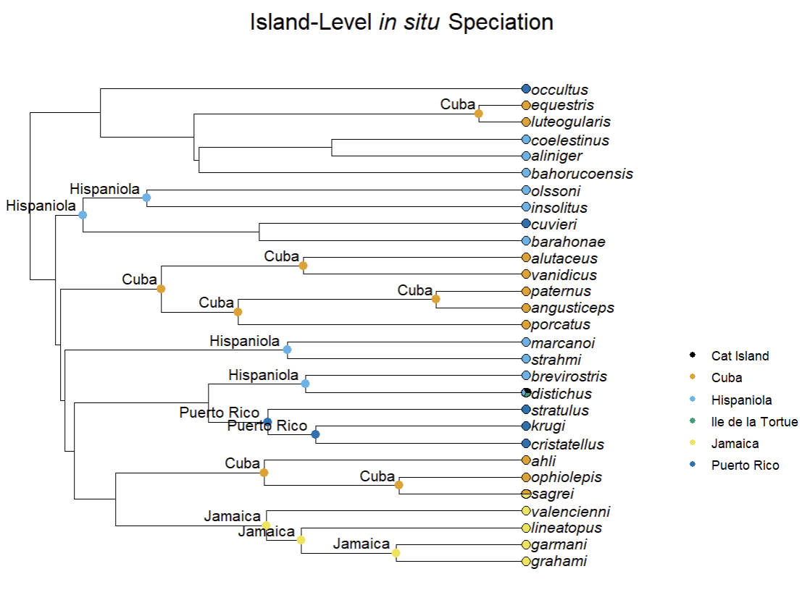

Stochastic Character Mapping With insitu
StochasticCharMapping.RmdIntroduction
Stochastic character mapping is a specialization of ancestral state
reconstruction (ASR) that estimates the history of character state
changes across branches, instead of only at the nodes as in traditional
ASR. ape::ace(), which is used in
insitu::run_geo_asr(), is a traditional implementation of
ASR. Stochastic character mapping provides measures of uncertainty for
estimated character state changes by randomly sampling potential
evolutionary histories across the phylogeny.
In this vignette, we will use stochastic character mapping to estimate the geographic history of a small sample of Anolis lizards native to the Caribbean Islands.
First, let’s load and prepare the Anolis example data that we used in the Getting Started vignette.
# Load insitu library
library(insitu)
# Read in example tree
tree <- ape::read.tree(system.file("extdata/Patton_etal_trimmed.tree",
package = "insitu"))
# Handle non-ultrametricity and incomplete taxon sampling
tree <- prep_phylo(tree)
# Read in example dataset
dat <- read.csv(system.file("extdata/anolis_dat.csv",
package = "insitu"))
# Ensure that species represented in both the tree and data are the same
matched <- match_island_phylo(phy = tree, locs = dat)## ℹ Species dropped from the tree because they were not in the data: transversalis and heterodermus## ℹ Species dropped from the data because they were not in the tree: loysiana## ℹ Matching complete! Here are the first 5 locales in your data:## # A tibble: 5 × 3
## locale species_list richness
## <chr> <chr> <int>
## 1 Cat Island distichus 1
## 2 Cuba luteogularis, equestris, alutaceus, vanidicus, porcatus, paternus, angusticeps, ahli, … 10
## 3 Hispaniola coelestinus, aliniger, bahorucoensis, olssoni, insolitus, barahonae, brevirostris, dis… 10
## 4 Ile de la Tortue distichus 1
## 5 Jamaica valencienni, lineatopus, garmani, grahami, sagrei 5Stochastic Character Mapping
Next, we will run the key function for estimating the geographic
history of 30 species of Anolis lizards that occur on the
Caribbean Islands: insitu::simmap_insitu(). Once our data
has been processed, we can use the insitu::simmap_insitu()
function with the phylogeny and presence-absence matrix (PAM) that are
returned by insitu::match_island_phylo(). The function also
requires the user to specify a transition model and a number of
simulations. The documentation for ape::ace() includes more
information about transition models, and for this example, we will use
the equal rates (ER) model. The ER model assumes that every state change
has the same rate. The insitu::simmap_insitu() function
uses the phytools::make.simmap() function for stochastic
character mapping.
# Run simmap_insitu
sim_results <- simmap_insitu(phy = matched$phy,
PAM = matched$PAM,
model = "ER",
nsim = 10)## Running MCMC burn-in. Please wait....
## Running 1000 generations of MCMC, sampling every 100 generations.
## Please wait....
##
## Running MCMC burn-in. Please wait....
## Running 1000 generations of MCMC, sampling every 100 generations.
## Please wait....
##
## Running MCMC burn-in. Please wait....
## Running 1000 generations of MCMC, sampling every 100 generations.
## Please wait....
##
## Running MCMC burn-in. Please wait....
## Running 1000 generations of MCMC, sampling every 100 generations.
## Please wait....
##
## Running MCMC burn-in. Please wait....
## Running 1000 generations of MCMC, sampling every 100 generations.
## Please wait....
##
## Running MCMC burn-in. Please wait....
## Running 1000 generations of MCMC, sampling every 100 generations.
## Please wait....The sim_results object includes per-island ancestral
state probabilities for each node. As with the tradiational ASR approach
described in the Getting Started vignette, the sim_results
object can be used to map in situ speciation events and
ultimately visualize those events on the phylogeny.
# Use map_insitu_events to estimate locations of in situ speciation events
events <- map_insitu_events(recons = sim_results, phy = matched$phy, PAM = matched$PAM)
# Visualize the estimated in situ speciation events on the phylogeny
plot_classified_phylo(phy = matched$phy, events = events, PAM = matched$PAM)
Here, we visualize the colonization and in situ speciation
history for 30 Anolis species across four islands. As discussed
in the Getting Started vignette, these events can be further
contextualized using several functions from insitu. One
option is the insitu::decompose_diversity() function, which
provides users with counts of each type of potential event (in
situ speciation, export, and import; see the Getting Started
vignette for more details).
div <- decompose_diversity(phy = matched$phy,
events = map_events,
PAM = matched$PAM)
# Look at the first 5 rows of the classification data frame
head(div, n = 5)## island n_species n_insitu n_import n_export prop_insitu
## 1 Cat Island 1 0 1 0 0.0
## 2 Cuba 10 10 0 1 1.0
## 3 Hispaniola 10 7 0 2 0.7
## 4 Ile de la Tortue 1 0 1 0 0.0
## 5 Jamaica 5 4 1 0 0.8